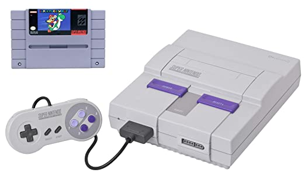

Welcome to the first project page! This webpage will feature items such as my resume and a little history lesson on video games! Enjoy!
My name is Patryk and I am a student at IIT. I have been really enjoying my current classes and I can't wait to see whats in store next. Some of my favorite things to do include messing around with old tech like older game consoles or network switches. I also really enjoy playing tennis and basketball. One of my favorite past times however would definitely be videogames. I especially enjoy older Nintendo consoles and games and I have been on the hunt to collect every single Nintendo home console ever made. I currently have an N64, Wii, Wii U, and Nintendo Switch and I am still missing the NES, SNES, and Gamecube. I also have most of the Nintendo handhelds including the Gameboy Color, Gameboy Advance, Nintendo DS, and Nintendo 3DS.
